Lecture 3: Line Segment Intersection, Circumcenters, Delaunay Triangulation, JSON
Click here to see today's slides
Today we went over three applications of vector math: line segment intersection, triangle circumcenters, and Delaunay Triangulation. While these all might sound like unrelated topics, they turn out to be tools together in the same big picture. The first two also happen to be the question in part 2 of the first mini assignment
Line Segment Intersection
Let's dive into line segment intersection now. The picture below shows what we want to accomplish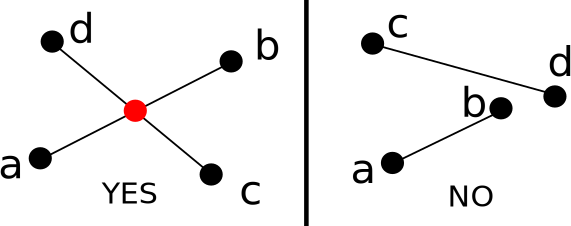
Note that this is asking more than simply detecting if line segments intersect or not, which is fine for some applications; in this lecture, we're going to talk about how to actually find the point of intersection if it exists. We will start out in 2D, which is all that's required for the first mini assignment, but we will also talk about how to extend this to 3D.
Before we jump into the segment part, let's talk about the more general problem of intersecting infinite lines. Then the segment part will be a simple tweak. To talk about intersecting lines, it's helpful to use the parametric form of lines that describes a line as a point on the line plus a scalar times a direction vector, as shown in the picture below:
Mathematically, line 1 is described as
\[ l_1: \vec{a} + s \vec{u} \]
and line 2 is described as\[ l_2: \vec{b} + t \vec{v} \]
Note that a and b can be any two points on l1 and l2, respectively, and these two equations will describe the same set of points.Now let's figure out how to actually intersect them. In order to do this, we need to find a point in common between the two. What we want is an s and a t so that
\[ \vec{a} + s\vec{u} = \vec{b} + t\vec{v} \]
Geometrically, we want the red point in the figure below: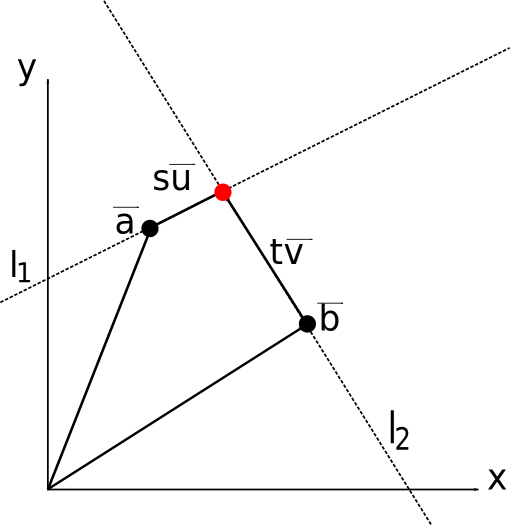
In 2D, because each direction vector has two coordinates, we have two equations in two variables:
\[ (1) \vec{a}_x + s \vec{u}_x = \vec{b}_x + t \vec{v}_x\]
\[ (2) \vec{a}_y + s \vec{u}_y = \vec{b}_y + t \vec{v}_y\]
Now re-arrange the variables so that the unknowns are on the left side\[ (1) s \vec{u}_x - t \vec{v}_x = \vec{b}_x - \vec{a}_x \]
\[ (1) s \vec{u}_y - t \vec{v}_y = \vec{b}_y - \vec{a}_y \]
Cramer's Rule
You can solve this any way you want that you learned in a past algebra class, but an easy-to-implement way with such a small system of equations is Cramer's Rule. For Cramer's rule, it's helpful to rewrite the system of equations in matrix form (we'll talk more about matrices next Thursday). For now, we'll simply state that for a system of equations\[ (1) a s + b t = e \]
\[ (2) c s + d t = f \]
Cramer's rule tells us that the solutions are\[ s = \frac{ \left| \begin{array}{cc} e & b \\ f & d \end{array} \right| }{ \left| \begin{array}{cc} a & b \\ c & d \end{array} \right| }, t = \frac{ \left| \begin{array}{cc} a & e \\ c & f \end{array} \right| }{ \left| \begin{array}{cc} a & b \\ c & d \end{array} \right| } \]
Where the| A | notation means the 2D determinant of the matrix A. In other words, when viewed as a matrix equation Ax = b, or when expanded:
\[ \left[ \begin{array}{cc} a & b \\ c & d \end{array} \right] \left[ \begin{array}{c} s \\ t \end{array} \right] = \left[ \begin{array}{c} e \\ f \end{array} \right] \]
take a quotient of determinants, where the denominator is the determinant of A and the numerator is the determinant of A replacing the column corresponding to the variable you want by b. Expanding everything out, we get\[ s = \frac{ed-fb}{ad-cb}, t = \frac{af-ce}{ad-cb} \]
Going back to our original system of equations for the line segments and plugging in the corresponding constants from the points and direction vectors (check me on this before implementing!!), we get\[ s = \frac{-v_y(b_x-a_x) + v_x(b_y - a_y)}{-u_xv_y + u_yv_x}\]
\[ t = \frac{u_x(b_y - a_y) - u_y(b_x - a_x)}{-u_xv_y + u_yv_x} \]
Now that's a neat little closed form solution, isn't it?
But note, very importantly, that if the two lines are parallel, the denominator will be zero (and we certainly don't want to divide by zero). That is, if u = (a, b) and v = (ka, kb) for some constant k, then the denominator is (-akb + bka = 0). This of course makes perfect geometric sense, because in planar Euclidean geometry, parallel lines either never intersect (no solution), or they are the same line (infinitely many solutions). So always check that denominator to see if there is a unique solution or not.
To extend what we have just done to two line segments ab and bc, we simply solve the system of equations that we get from
\[ \vec{a} + s(\vec{b-a}) = \vec{b} + t\vec{(d-c)} \]
With the constraints that\[ 0 \leq t \leq 1 \]
\[ 0 \leq s \leq 1 \]
The picture below depicts this setup for two non-intersecting line segments (no solution)When
s = 0, we are at the endpoint a of segment ab, and when s = 1, we are at the endpoint b. Same story for t of segment cd
3D And Skew Lines
This exact scenario as described won't quite work for 3D line segments, because there are ways that two non-parallel lines can completely miss each other. These are called skew lines. Here's an example of two line segments that line on skew lines: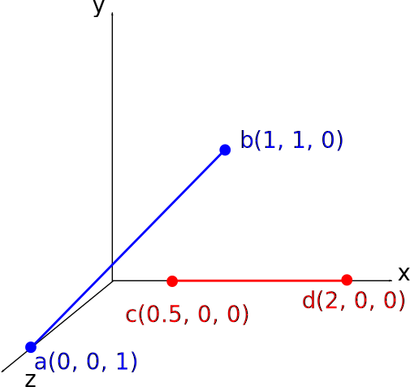
When viewed from this angle, the red line goes underneath the blue line. To check for skew lines, there's a simple test involving the cross product. Take the cross product between the vector from a to b and the vector from c to d. If these line segments are part of lines which intersect, then these vectors will be on the same plane, and the cross product will give the plane normal (vector perpendicular to the plane, which we'll talk more about on Tuesday). This means that the difference between any point from the first line and any point from the second line will lie in the plane perpendicular to that cross product, and so the dot product of the difference of any two such points with that cross product is zero. The picture below depicts this, showing how a vector from c to b is perpendicular to the cross product n:
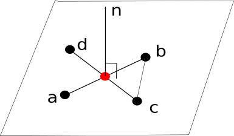
If the dot product is not zero, then the lines do not lie in the same plane and are hence skew lines. Check for this before applying the techniques above for 3D line segments. You will also have to slightly tweak Cramer's rule to account for the fact that there are 3 equations in 2 variables (though if the lines are in the same plane, there is a "linear dependence" between them that causes there to really only be two equations).
NOTE: Randomly sampling from the space of lines will give you skew lines with probability 1. But we're often dealing with scenarios in 3D where although the coordinates are in 3D, we're working on some plane that lives in 3D space. Skew lines haven't been that common in geometry applications in my experience
Just one more quick word about this and then we can move on. Why didn't I use the equations y = mx + b? Well what if the line is vertical? Then m is infinity. And if the line is close to vertical, then m can become very large and make the computation numerically unstable. The parametric form is quite nice because it is agnostic to direction and it generalizes easily to higher dimensions.
Triangle Circumcenters
Now we're going to switch to talking about the triangle circumcircle, which is the unique circle that contains all points on the triangle. But first, we need to talk about circles.Definition 1: Circle
A circle in the 2D plane with a centerc and a radius r is the set of all points that are of distance r from c. Mathematically, by the Pythagorean theorem, they are the points that satisfy the equation
\[ (x - c_x)^2 + (y - c_y)^2 = r^2 \]
for centerc = (cx, cy) and radius r. This equation is known as the implicit form of a circle.
That is, given a center c, a radius
r, and an angle theta, this picks out the point
\[ \vec{c} + (r \cos(\theta), r \sin(\theta)) \]
Note that there are 3 numbers we need to uniquely determine a circle. Another way of saying this is that a circle has three degrees of freedom. This means that to determine a circle, we need exactly three constraints. Well, a triangle has three points, so that means we must be able to find a unique circle that goes through those points:
Definition 2: Triangle Circumcircle / Circumcenter
For a triangle with points a, b, and c, the triangle circumcircle is the unique circle with center p, called the circumcenter, and radiusr such that
\[ d(\vec{a}, \vec{p}) = d(\vec{b}, \vec{p}) = d(\vec{c}, \vec{p}) = r \]
Where d(x, y) is the distance between points x and yOne amazing geometric fact about triangle circumcenters is that they lie on the intersection of the perpendicular bisectors of the three sides, as shown in the picture below (circumcenter drawn in red):
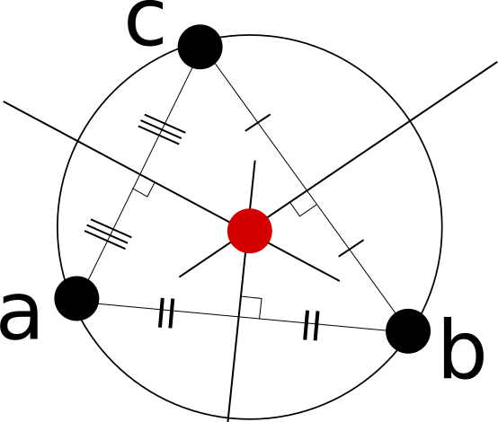
This is actually not too hard to see from the definitions.
- First, note that the perpendicular bisector of a line segment ab contains all points which are equidistant from a and b.
- Similarly, the perpendicular bisector of the line segment bc contains all points which are equidistant from b and c.
- A point which is on the intersection of two lines is contained in both, which means that a point at the intersection of the perpendicular bisector of bc and the perpendicular bisector of ab is equidistant from b and c but also equidistant from a and b. Therefore, it's equidistant from all three!
Interactive Demo: Circumcenter Discovery
This demo provides an interactive proof of the fact that the perpendicular bisectors of any two of the sides intersect at the triangle circumcenter.- Click "choose points" and select three points by left clicking (right click to delete the most recently selected point).
- Once three points are chosen all of the perpendicular bisectors will be drawn. Then click "drag mouse." The program will snap the mouse to the nearest perpendicular bisector and draw a circle centered on the bisector and intersecting the two points that make it up to illustrate the fact that every point on the bisector is equidistant to those two points.
- When the mouse is dragged close to the circumcenter, all three points will be highlighted and you will notice that the circle contains all three.
|
|
Note that some care has to be taken with obtuse triangles, because the circumcenter lies outside of the triangle, as shown below in a screenshot from the demo program:
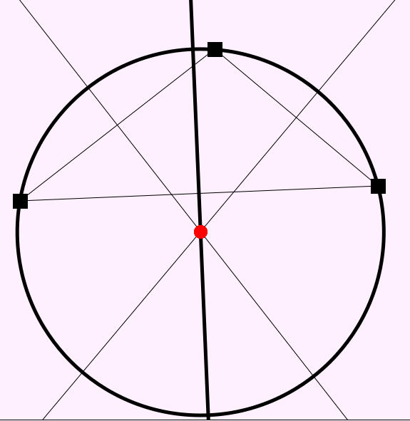
This will be important in applications later in the course when we talk about Voronoi areas in the "stretchy shapes" unit.
Note also that this process can be continued recursively into higher dimensions. For instance, for four noncoplanar points in 3D that span a tetrahedron, it is possible to find a circumsphere containing all 4 points by intersecting two lines that are perpendicular to two of its triangle faces and which go through the circumcenters of the respective faces:
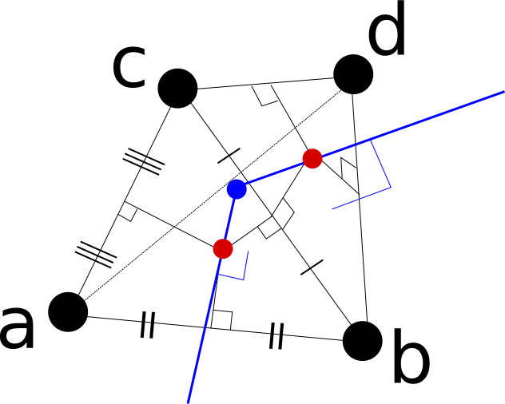
A sphere has 4 degrees of freedom so it makes sense that we would need 4 independent points to determine one. If I were to make a demo like the one for the circumcircle, I would be sliding a sphere along one of those blue lines which always touched at least three points, and which would touch all four points at the circumsphere center.
Delaunay Triangulation
Now we know enough to define what's called a Delaunay Triangulation (pronounced "Duh Lawn A") of a set of points in 2D. But first, what is a triangulation of a point set?Definition 2: Triangulation
A triangulation of a point set P in 2D is a collection of triangles connecting points in P so that ever point is on at least one triangle and no triangle intersects the interior of another.Towards the end of the second unit we will talk about how to add triangles to points in 3D, but for now we focus on the 2D case. Take the point set below, for example:
Point Set
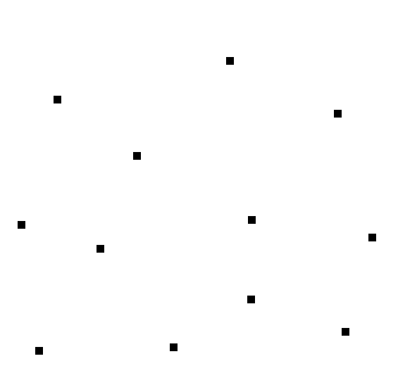Here is one possible triangulation:
Example Triangulation
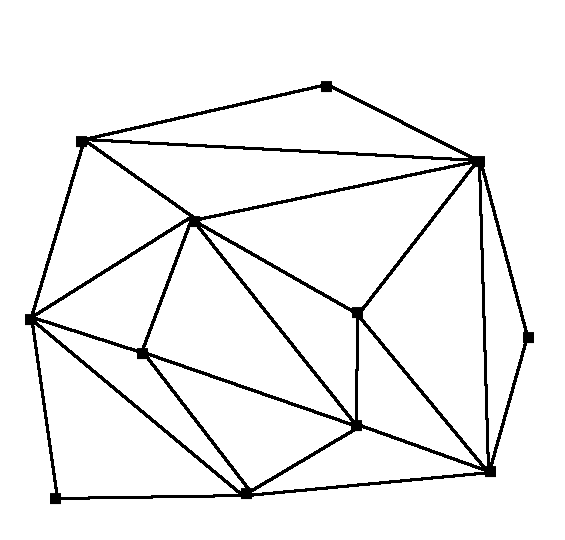This is perhaps not a great triangulation, though. This is mainly because we tend to prefer triangles that are as close to equilateral as possible, and we conversely tend to not like triangles which are long and skinny. This is because we sometimes want to use the triangulation to help interpolate function values, and having a long skinny triangle means the function likely varies much more along one direction than the other, making that a bad approximation. Below shows the Delaunay Triangulation of the same point set:
Delaunay Triangulation
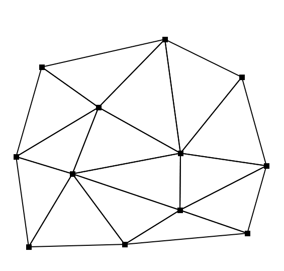These triangles look a lot more even. Here's the definition of a Delaunay Triangulation
Definition 3: Delaunay Triangulation
A Delaunay Triangulation of a point set P is a triangulation of P having the property that the circumcircle of every triangle is empty; that is, no point in P is contained in the interior of any triangle's circumcircle (only on the borders).Here is a picture showing the circumcircles superimposed over every triangle in the Delaunay triangulation above (verify that no circle contains any of the black points):
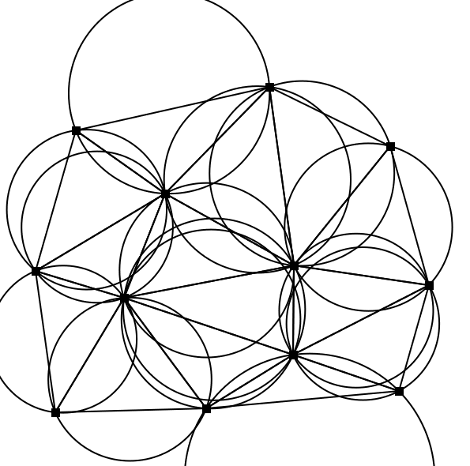
Therefore, a brute force algorithm for computing a delaunay triangulation on a point set of size N would be to try out all triples of points, compute their circumcircles, and check to see if any of the points lie in its interior. If not, then keep the triangle. This takes O(N4) time because there are O(N3) triangles, and for each triangle we need to test all N points to see if any are contained in the circle (I'm sweeping some issues about uniqueness of the triangulation under the rug but that's the idea)
Delaunay triangulations have lots of amazing properties. Two of the most important ones are
- The Delaunay triangulation maximizes the minimum angle over all of the triangles in the triangulation, out of all possible triangulations. This is exactly what we wanted in our laundry list, of not having too many long and skinny triangles, and you can see above that the triangulation looks much nicer and cleaner
-
The boundary of the Delaunay Triangulation is always the convex hull, or the minimum enclosing convex region of the points in the point set. That is, if you take a rubber band and stretch it around all of the points, and then snap it in place, it will coincide with the boundary of the Delaunay triangulation. Convex approximations of points sets are very useful, as we will see next lecture, so it's nice that we can guarantee that we get the tightest fitting convex shape possible around the points.
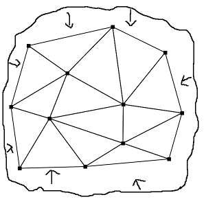 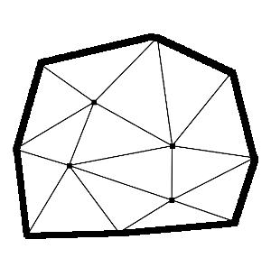
Interactive Demo: Delaunay Circumcircles
|